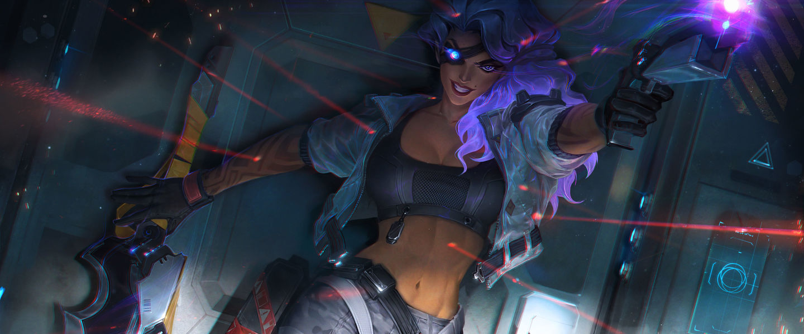

League Of Legends
League Of Legends Wiki
League Of Legends Twitter
¿En Que Consiste El Juego?
Es un juego MOBA de dos equipos de 5 jugadores los cuales van a diferentes lineas que son lugares del mapa,cada jugar tiene un rol de juego uno de estos son:ADC el cual va en la linea inferior del mapa este tipo de jugadores se destacan por ser el daño del equipo,estos usan personajes que son la mayoria tiradores los cuales son campeones con mucho daño

¿Quien Es Samira?
Samira y sus padres se ganaban la vida como artistas callejeros. Deslumbraban y cautivaban a todos los espectadores, y su estilo de vida entusiasmaba a la joven Samira, pero suponía una fuente de preocupaciones para sus padres.Ya de mayor Samira se traslada a vivir a la ciudad de Noxus en dondes esta se vuelve traficante de armas